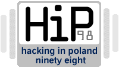

|  | ||||||||
| HiP'98 - Belchatow (Poland) | ||||||||
| This year's "Hacking in Poland 98" brought together hundreds of hackers, phreakers, coders, carders and others from the h/p/a/v/c scene. | ||||||||
| History and organization of HiP | ||||||||
| This was the 4th HiP, but it was really
nothing like the others. In past years, crowds rarely topped 50, and security
concerns kept publicity low. Everything is changing now. By September of 97,
hacking was becoming so popular in Poland that the main organizers (morbius and
wiedzmin) decided to completely change the way this year's HiP would be run.
After they announced some of the changes, hackers started to come to them and
offer to lecture on what they knew. Of course, there were still a lot of
problems to resolve, like how to provide hardware, accommodations, and an area
for mass media. Fortunately they found a sponsor early on.
Many people asked, "why have it in Belchatow? It's so small." The reasons were simple. Renting the space there was cheap, and security wasn't a problem (local police don't know anything about hacking and phreaking). Some people wanted the event to be in Warsaw, in "Piwnica" - the most popular pub there, but everything would have been a lot more expensive. Although the space in Belchatow was a little small, (it usually holds 100 people but crowds reached 200 during speeches) it felt more cozy than cramped. | ||||||||
| The main events | ||||||||
| HiP was the first time that Polish hackers got
a chance to meet each other and share their experiences. In my opinion that was
the most important aspect of the party. Many hackers met each other for the
first time at HiP, but I'm sure a lot of people will meet again soon. Lectures were another important aspect of HiP. The general schedule was: 11oo - 18oo lectures, presentations, practice, and 20oo - ???? private meetings of different hackers, practice. Most speeches discussed either Windows 95/NT or Unix/Linux systems. Some of the topics included: "How to obviate firewall in Windows 95/NT system," "Sites sniffing," "Finding new bugs in fresh protect-system patches," "Scanning Linux source by own algorithms," "Hacking Domestic nets and intranets," "Carding - how to not be caught," "Carding - protect your credit card," "Phreaking on public phones using silver box or spoon," "Phreaking from house - forget about boxes," "How to hack without practice knowledge - social engineering," etc....
The day before HiP, Polish journalists had been saying, "with so many hackers together, they're bound to hack something." They were right. None of the incidents were planned by HiP organizers, but hackers are always looking for a new challenge. Belchatow is very small town and its telecommunication service is one of the lowest in Poland. Calling for free from public phones is easy (I checked it ;) ). A lot of people spent the day calling distant nations and 0-700-xxxx numbers, wasting at least $2,000 a day in phone service. Later, a few hackers, using a Laptop and a public phone, hacked TPSA's internet server. TPSA workers and police arrived and interrogated many guests (not just the hackers). Nobody found anything, probably because most of the hackers stayed in hotel rooms they'd booked for the event. Hackers were happy to talk with journalists, but only at HiP. Outside the con, they wanted to be away from the media. The hacking community is a lot like the warez scene. They don't want to be "too famous." If everybody knows who you are, it's dangerous, and fame isn't really necessary amyway. The media did a pretty good job reporting on HiP. Most of the articles were fairly unbiased, and some of them were pretty interesting. | ||||||||
| Party results and future plans | ||||||||
| ||||||||
| Polish h/p/a/v/c scene - general reflection after HiP | ||||||||
Although Poland and other Eastern Europe countries have ancient telecommunication services, internet services are quickly catching up with Western Europe. By 1999 it's estimated that 10% of Polish people will have internet connections through Cable TV (fast and quite cheap). Faster, and more available connections will naturally effect the scene a great deal. More people will have access to the scene, and meetings like HiP will help introduce them. On the other hand, more people will mean more attention from the police. In Poland, a lot of people think of a hacker as a person who spends all their time searching for free XXX sites and destroying servers. Changing this stereotype is just one more reason for organizing more meetings like HiP. In summary I can say that the future of hacking in Poland looks pretty good. Advances in computers and the internet will help, but what happens to hacking in the future is more about people than technology. | ||||||||
| kot | ||||||||
{kind=link}
{kind=link}
{kind=link}
{kind=link}
{kind=link}
{kind=link}
{kind=link}
{kind=link}
{kind=link}